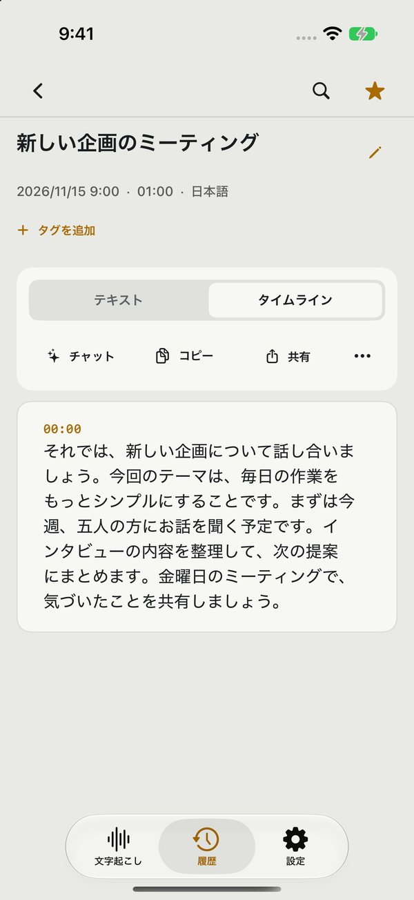
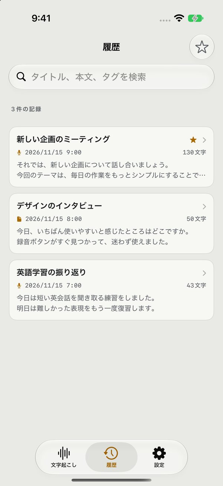
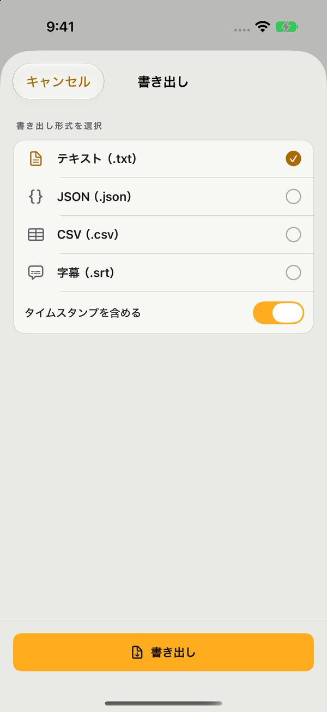

音声をテキストに変換できます。
会議や講義、インタビューを録音するか、音声や動画のファイルを読み込むだけで、iPhoneやiPadで文字起こしを取得できます。
iOS 26以降の対応端末では、録音しながらリアルタイムで文字を表示できます。iOS 26以降でApple Intelligenceが有効なら、履歴チャットで文字起こしのAI要約を依頼できます。
- すべての機能が無料
- 広告なし
- App内課金なし
- アカウント不要
- iPhone & iPad
すべての機能を無料で使えます。
有料プランはありません。このページに掲載しているすべての機能 — 録音、ファイルの読み込み、すべてのWhisperモデル、書き出し、履歴、タグ、Apple Intelligenceチャット、ショートカット — を無料で利用できます。アカウントの作成は不要で、アプリに広告は表示されません。
- サブスクリプションも買い切り購入もありません
- App内課金も、ロックされた機能もありません
- 広告も、第三者によるトラッキングもありません
- サインアップもログインも不要です
- 録音時間やファイル数について、アプリが設ける上限はありません — デバイスのストレージ、メモリ、バッテリーの制約は受けます
文字起こしの流れ
録音または読み込み
タップしてマイクで録音するか、「ファイル」Appや「写真」から音声・動画ファイルを選びます。録音中は一時停止と再開ができます。
確認、編集、書き出し
タイムスタンプ付きのテキストを確認して誤りを修正し、TXT、CSV、JSON、SRT字幕として共有できます。
このアプリでできること
アプリの主な機能を詳しく紹介します。
録音も、手持ちのファイルも
ワンタップで録音を始めるか、すでにあるファイルを読み込みます。アプリが音声を変換し、デバイス上で文字起こしします。
- 一時停止と再開に対応したマイク録音、外付けマイク用のマイク切り替え
- Live Activityによるロック画面とDynamic Islandへの録音状態の表示(対応するiPhone)
- 「ファイル」AppからM4A、WAV、MP3、MP4、MOVなどの音声・動画を読み込み
- 「写真」ライブラリから直接動画を選択
- 長時間の録音のための「画面をオンのままにする」(任意)
Whisperが、デバイス上で動きます
アプリはOpenAIのオープンなWhisperモデルをwhisper.cpp経由で使用し、利用できる場合はMetal GPUで高速化します。別のモデルを選ぶことで、速度と精度のバランスを調整できます。
- 10種類のWhisperモデル。Tiny(約15 MB)からLarge v3 TurboやMedium(最大約1.5 GB)まで
- 言語の自動検出、または18言語から選択
- 結果を英語に翻訳するオプション
- 対応デバイスで処理を高速化できる場合があるCore MLエンコーダーの任意ダウンロード
- iOS 26以降では、Appleのオンデバイス音声エンジンも代替として利用できます

タイムライン表示と読みやすいテキスト表示
すっきりしたテキスト表示と、タイムスタンプ付きのタイムライン表示を切り替えられます。元の音声を再生して発言内容を確認し、必要に応じてテキストを修正できます。
- テキスト表示とタイムライン表示(タイムスタンプの表示は任意)
- 再生速度と再生位置を調整できる音声再生
- 文字起こし本文とタイトルの編集
- 段落単位または全文のコピー
- 文字起こし内の検索

検索できる履歴
すべての文字起こしはデバイスに保存されるので、あとからいつでも見返せます。
- タイトル、本文、タグで検索
- お気に入りと並べ替え
- すべての文字起こしにまたがるタグの追加、名前変更、統合、削除
- タグによる履歴の絞り込み

テキスト、データ、字幕
メモ、表計算、スクリプト、動画編集など、用途に合った形式で文字起こしを共有できます。
- メモや文書向けのTXT
- 表計算向けのCSV
- 独自ツール向けのセグメント付きJSON
- 動画編集向けのSRT字幕
- 元の録音を音声ファイルとして共有
文字起こしについて質問 iOS 26+
Apple Intelligenceに対応したデバイスでは、文字起こしについてチャットできます。要約や重要な決定事項、アクションアイテムを尋ねたり、タイトルを生成したりできます。チャットは文字起こしごとに保存されます。長い文字起こしはセクションに分けて読み込まれます。任意のPrivate Cloud Computeモード(iOS 27以降)は初期状態でオフです。
ショートカット & Siri
Appショートカットを使って、録音の開始や停止、メディアファイルの文字起こし、文字起こしの検索、文字起こし本文の取得、タグやお気に入りの追加ができます。自動化に便利です。一部のアクションには、より新しいバージョンのiOSが必要です。
すべての機能 — すべて無料
現在アプリで利用できる機能の一覧です。購入が必要なものはありません。
録音
- マイク録音無料
- 録音の一時停止と再開通話などの割り込みにも対応無料
- マイクの切り替え無料
- 録音中のLive Activityロック画面とDynamic Island無料
- 音声ファイルの読み込みM4A、WAV、MP3など一般的な形式無料
- 動画ファイルの読み込みMP4、MOVなど一般的な形式無料
- 「写真」からの動画読み込み無料
- ライブ文字起こし話すそばからテキストを表示 · iOS 26+無料
音声認識
- デバイス上で動くWhisper(whisper.cpp)無料
- 10種類すべてのWhisperモデルTiny、Base、Small、Medium、Large v3 Turboとコンパクトなバリエーション無料
- Appleのオンデバイス音声エンジンiOS 26+、言語はiOSが管理無料
- 自動検出、または18言語から選択無料
- 英語への翻訳無料
- Metal GPUによる高速化デバイスが対応している場合無料
- Core MLエンコーダー(任意ダウンロード)無料
精度とパフォーマンスのツール
- 無音区間のスキップ音声アクティビティ検出(VAD)無料
- ノイズと音量を調整ノイズ低減と音量の正規化無料
- 認識させたい単語・固有名詞モデルに伝えておきたい人名や用語無料
- Flash Attentionメモリ使用量を抑え、処理を高速化できる場合があります無料
- タイムスタンプを含める無料
閲覧と編集
- テキスト表示とタイムライン表示無料
- 速度を調整できる音声再生無料
- 文字起こし本文とタイトルの編集無料
- 段落または全文のコピー無料
- 文字起こし内の検索無料
履歴と整理
- 保存される文字起こし履歴無料
- タイトル、本文、タグでの検索無料
- お気に入りと並べ替え無料
- タグの追加、名前変更、統合、削除無料
- タグによる絞り込み無料
書き出しと共有
- テキスト(.txt)無料
- CSV(.csv)無料
- JSON(.json)無料
- 字幕(.srt)無料
- 元の音声の共有無料
- 共有シートからのテキスト共有無料
Apple Intelligence
- 文字起こしについてのチャットiOS 26+ · 対応デバイス無料
- 文字起こしごとに保存されるチャット履歴無料
- タイトルの生成無料
- Private Cloud Computeモード任意 · iOS 27+ · 初期状態はオフ無料
自動化とアプリ
- ショートカット & Siriのアクション無料
- iPhoneとiPadのレイアウト無料
- ライト、ダーク、システムの外観無料
- 11言語のインターフェース無料
- モデルとストレージの管理無料
iOSのバージョンが記載された機能は、そのバージョン以降が必要です。Apple Intelligenceの機能は、デバイスの対応状況、地域、言語設定にも左右されます。
音声をデバイスに留める設計
Whisperの文字起こしはローカルで動作します。アプリには広告、分析SDK、第三者によるトラッキングは含まれておらず、音声や文字起こしを開発者に送信することもありません。
デバイスに留まります
録音、読み込んだメディア、文字起こし、タグ、チャット、設定は、お使いのデバイスのアプリ内に保存されます。いつでもアプリ内で削除できます。
アプリが接続するとき
Hugging FaceからWhisper、VAD、Core MLのモデルファイルをダウンロードするとき、App Storeで新しいバージョンを確認するとき、iOSがAppleのエンジン用の音声モデルをダウンロードするときです。
選べるのはあなた
Apple IntelligenceのPrivate Cloud Computeは初期状態でオフです。オンにすると、文字起こしのテキストと質問がAppleのPrivate Cloud Computeで処理されます。書き出したファイルを共有すると、選んだ共有先に送信されます。
使い始めるための準備
デバイスとシステム
iOS / iPadOS 17.0以降のiPhoneまたはiPad。ライブ文字起こし、Appleの音声エンジン、オンデバイスのApple IntelligenceにはiOS 26以降、Private Cloud ComputeにはiOS 27以降が必要です。
ストレージとネットワーク
モデルのダウンロードには、インターネット接続と空き容量が必要です(モデルによって約15 MB〜1.5 GB)。録音にはマイクへのアクセス許可が必要です。
よくある質問
アプリは本当に無料ですか？
はい。現時点ではすべての機能を無料で利用できます。広告、App内課金、サブスクリプション、アカウント登録はありません。
オフラインでも使えますか？
Whisperの文字起こしはデバイス上で動作するよう設計されています。モデルのダウンロードには一度インターネット接続が必要ですが、その後はそのモデルでの録音と文字起こしを、通常は接続なしで行えます。他のモデルのダウンロード、アップデートの確認、任意のPrivate Cloud Computeモードには接続が必要です。
音声はサーバーに送信されますか？
Whisperの文字起こしはローカルで動作し、アプリが音声や文字起こしを開発者に送信することはありません。唯一の例外は、ご自身で選択できるApple Intelligenceチャット用の任意のPrivate Cloud Computeモードで、文字起こしのテキストと質問がAppleのPrivate Cloud Computeに送信されます。この設定は初期状態でオフです。
どのファイルを読み込めて、何に書き出せますか？
「ファイル」AppからM4A、WAV、MP3、MP4、MOVなどの一般的な音声・動画形式を読み込めます。「写真」からは動画を読み込めます。文字起こしはTXT、CSV、JSON、SRTとして書き出せ、録音は音声ファイルとして共有できます。
対応している言語は？
文字起こしでは、自動検出を使うか、英語、日本語、中国語、韓国語、スペイン語、フランス語、ドイツ語、イタリア語、ポルトガル語、ロシア語、アラビア語、ヒンディー語、オランダ語、ポーランド語、トルコ語、ベトナム語、タイ語、インドネシア語から選べます。結果は言語によって異なる場合があります。アプリのインターフェースは11言語で利用できます。
動画の字幕を作れますか？
はい。動画を読み込んで文字起こしし、SRTとして書き出せます。多くの動画編集ソフトはSRTファイルを読み込めます。字幕のタイミングは認識されたセグメントに沿うため、編集ソフトで調整するとよいでしょう。
録音できる長さはどれくらいですか？
アプリは固定の上限を設けていません。実際には、非常に長い音声はデバイスの空き容量、メモリ、バッテリーの影響を受け、大きいモデルほど時間がかかります。長いファイルで失敗する場合は、小さいモデルやFlash Attentionが役立つことがあります。
これはOpenAIの公式アプリですか？
いいえ。これは、オープンソースのwhisper.cppプロジェクトを通じてOpenAIが公開しているWhisperモデルを実行する独立系アプリです。OpenAIとの提携や承認関係はありません。